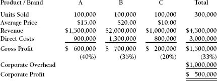

CHAPTER EIGHT

Overhead Allocations
Corporations are required by generally accepted accounting principles to allocate (mathematically distribute or apportion) their overhead expenses to individual profit centers when they prepare their information for the Internal Revenue Service (absorption accounting in LIFO/FIFO calculations), the Securities and Exchange Commission, and certain industry-specific regulatory authorities. There are numerous criteria that may be used for this calculation, including revenue, direct cost, units produced, direct labor dollars or hours, and square footage consumed.
It is often presumed, incorrectly, that the methodology that must be used for regulatory compliance is also appropriate for intelligent management decision making. Nothing could be further from the truth.
Problems That Arise from Cost Allocation
The process of allocating overhead charges to individual businesses can lead to several problems within a company.
It Fosters Politics
The process of allocating overhead charges to individual businesses fosters political infighting. When the management team of a strategic business unit shines as a result of its contribution to the improved profitability of the business, this is a positive result, and the company as a whole wins. However, when costs are allocated, a manager who knows how to manipulate the allocation methodology can make his department look better by getting charges assigned to other operating units. When one profit center looks good at the expense of another, without the company benefiting at all, that’s politics.
It Inhibits New Product Introductions
When analyzing the profitability of a new product, traditional accounting methodology assigns a portion of the existing overhead to that product. This inflates the cost of the new product and causes the estimates of its contribution to profit to be severely understated. The analysis of a new product should include only costs that are incremental for that new product. Existing overhead that is not affected should not be included in the analysis.
It Understates the Profitability of Business Beyond Budgeted Volume
Overhead allocations are assigned to all products, regardless of volume. When sales surpass budgeted expectations, the accounting department will continue to charge these overhead allocations to the individual products, even though the company has already generated enough business to pay for the actual corporate overhead. These fictitious charges will continue to be added until the end of the fiscal year. This leads to a severe understatement of the actual profits of each business that has had sales above the budgeted number and may cause the company to under reward unit managers who surpass their sales budgets. When the company’s books are closed for the year, this excess overhead will be removed from the costs. In accounting terminology, this is referred to as being “overabsorbed.” This correction, however, does not remove the business distortion that has occurred up until that time.
It Inhibits Marketplace Aggressiveness
Incremental business is really more profitable than the accounting information reveals. Larger customer orders permit longer production runs and more efficient raw material purchasing. Traditional accounting information does not recognize this.
The potential profitability of giving price breaks on larger customer orders (volume discounting) because of these advantages may not be recognized because overhead charges are assigned to the products regardless of volume.
It Overstates Savings From Eliminating “Marginal ” Products
A company should never eliminate products from its mix except in the following situations:
- The product achieves a negative contribution margin, and there is no opportunity to correct the situation.
- The product is a quality disaster that will impair marketplace perceptions of the entire business.
- The company is near capacity and needs the space, people, and machine time for more profitable offerings.
Eliminating a product that has a positive cash flow results in the loss of that cash flow. Why is there confusion about this? Because our accounting systems tell us that eliminating a product will save the variable labor costs and the corresponding overhead assigned to the product. Labor costs, as anyone who has ever managed an operation will tell you, are more fixed than variable. They will not be reduced appreciably, if at all, when volume declines. And overhead will not be reduced because the building does not get smaller, nor do the staff departments (including accounting).
If overhead spending is too high, then appropriate actions should be taken on their own merits. But to assume that all costs will decline because a product is eliminated is too simplistic and usually not true.
What About the IRS and GAAP?
Companies should continue to comply with their accounting responsibilities. Nothing that we are advocating here addresses regulatory issues at all. However, marketing and operating managers should receive the product and performance information that they need if they are to make intelligent business decisions and judgments. Accounting compliance and management information are not conflicting goals.
Effect on Profits of Different Cost Allocation Issues
To explore these issues, let’s look at a company with three profit centers. Exhibit 8-1 shows the annual results achieved by the Middlesex Products Company. The company is very profitable and serves its customers well. Each of the three profit centers focuses on a distinct marketplace and performs as a semi-independent unit.
Exhibit 8-1. Middlesex Products Company Income Statement
Full Year 2015

Revenue
Each profit center has developed a pricing structure that fits with what is necessary and desirable in its marketplace. Some profit centers might sell direct, whereas others might sell through distributors or reps. Their product mixes will certainly be different. For purposes of convenience, we will assume that each strategic business unit has sold 100,000 units of product.
Direct Costs
This includes all profit center costs and expenses. To be considered direct expenses:
- These costs must be specifically identifiable to an individual profit center. They include the costs of producing the product or providing the service, operating and staff expenses, and the costs of any services or functions that the profit center outsources to others.
- The expenditures must be incremental to the profit center. They are not shared among the profit centers, and so they would disappear if the responsible profit center were not in business.
- These costs may be fixed or variable. They can be part of the product, or they can be support costs. They could include costs for engineering, product design, and accounting, if those costs were dedicated to an individual profit center.
- The profit center management team must have some ability to control the costs for which it is responsible. While the management team does not control the purchase price of a natural resource, it can control the quantity purchased, the mode of transportation, the product source, and whether there is any value added to what is purchased.
Corporate Overhead
This includes all of those support efforts that are necessary if the entire organization is to function, such as accounting, legal, corporate staff, and management information systems. It also includes all spending that supports all of the profit centers combined and is really not divisible among them. For example, if all the profit centers were housed in a single building, this building would be considered part of the corporate overhead.
Profit
Gross profit percentages are gross profit dollars divided by revenue.
Corporate profit is the cumulative gross profit of all of the businesses less corporate overhead. An examination of how overhead allocations affect the perceptions of performance will be very valuable at this point.
Overhead Allocation
If the corporate overhead is allocated by revenue, the result will be:
| A | B | C | Total | |||||
| Gross Profit | $600,000 | $700,000 | $200,000 | $1,500,000 | ||||
| Overhead | 333,000 | 444,000 | 223,000 | 1,000,000 | ||||
| “Profit” | $267,000 | $256,000 | ($ 23,000) | $ 500,000 |
Because Profit Center A provided one-third of corporate revenue, it is charged for the same proportion of the corporate overhead. Remember that these corporate charges are not based upon the services that each profit center receives. The amounts allocated support the entire organization collectively.
Notice that on this basis, Profit Center C is now losing money. This profit center contributed $200,000 cash flow to pay for corporate overhead and achieve corporate profit. It now must revise its strategy to eliminate the losses that it neither caused nor can control. A more damaging conclusion is the feeling on the part of corporate management that this unit will never be “profitable” and therefore must be eliminated. If the allocation were based upon units sold, Profit Center C would have looked even worse:
| A | B | C | Total | |||||
| Gross Profit | $600,000 | $700,000 | $200,000 | $1,500,000 | ||||
| Overhead | 333,000 | 333,000 | 334,000 | 1,000,000 | ||||
| “Profit” | $267,000 | $367,000 | ($134,000) | $ 500,000 |
“Turning around” Profit Center C is clearly impossible. While remedies for its problems will be proposed, its days are numbered.
If corporate allocations are based upon direct labor (which is part of direct costs), all three of the profit centers will be profitable, as follows:
| A | B | C | Total | |||||
| Gross Profit | $600,000 | $700,000 | $200,000 | $1,500,000 | ||||
| Overhead | 450,000 | 400,000 | 150,000 | $1,000,000 | ||||
| “Profit“ | $150,000 | $300,000 | $ 50,000 | $ 500,000 |
With this method of overhead allocation, all three profit centers have achieved a “profit.”
Which method is correct? Is Profit Center C profitable or not? The answer depends upon which method of allocation the accounting department happens to have selected. All are acceptable in terms of GAAP requirements. The accounting department will study the company’s operations and attempt to select the method or formula that it perceives as being the most accurate. However, the results will be the same: Decisions will be based upon the statistical method selected. Will these decisions improve the business, as many expect they will? Let’s look at some of those decisions and focus on what solutions would be in the best interest of the Middlesex Products Company.
1. Are all profit centers contributing to the profitability of the business?
Absolutely yes. Each of the three has a positive contribution margin. Each is more than covering all of the costs and expenses associated with its individual business.
2. How should Middlesex management respond to excessive corporate overhead?
Not by passing it on to the profit centers and asking them to figure out a way to pay for it. The best strategy for eliminating excessive overhead is to hold those departments accountable for their own performance and reduce their budgets and/or expect them to increase their achievement. Allocating excessive spending to operating units does not solve the problem. Instead, it asks the profit center teams to solve problems that they did not create and cannot control. Increasing selling prices and compromising on product quality to compensate for others’ inefficiencies are remedies that are no longer available.
Because product quality and high levels of service are no longer negotiable, during the 2007–2009 time period, companies were forced to hold corporate managers accountable for their performance. Many of the millions of people who lost their jobs during that time period were middle- and higher-level managers who became expendable when the companies could no longer afford the luxury of having them on the payroll. These jobs will not be replaced. Economic pressure is increasing accountability at all levels, and all of those corporate staff jobs have ceased to exist.
3. In which business should Middlesex management expect improved profitability?
Why not all of them? We do not know, however, if each of the profit centers can improve its profitability to the same degree. Perhaps 20 percent profit growth would be very easy for Profit Center B but absolutely impossible for Profit Center C. A 20 percent gross profit in Profit Center C’s market might be relatively better performance than the 40 percent in Profit Center A’s market. We would have to benchmark each profit center against its respective competitors to determine what are feasible expectations. Achievement must be evaluated against potential. Learning management techniques from other businesses is very helpful. However, you cannot benchmark financial ratios among dissimilar businesses and reach decisions that will help the company overall.
4. In theory, what would be the most favorable product mix? If Profit Center A achieves a gross profit of $6.00 per unit ($600,000/100,000 units) and Profit Center C achieves a gross profit of $2.00 per unit, expanding Profit Center A’s business at the expense of Profit Center C would improve gross profit by $4.00 per unit (the gross profit differential). Keeping these numbers very simple, the ranking of these profit centers by gross profit dollars is:
Profit Center B: $7.00 per unit
Profit Center A: $6.00 per unit
Profit Center C: $2.00 per unit
However, if you rank the profit centers by gross profit percentage, the ranking changes:
Profit Center A: 40%
Profit Center B: 35%
Profit Center C: 20%
If you check your company’s financial statements, you will notice that in most cases, accountants rank product profitability by percentages, although it is their dollar impact that is most critical.
5. Should the fact that Profit Center C has a gross profit percentage that is below the average for the entire Middlesex Products organization be a cause for divestment?
Middlesex Products Company should never eliminate a business with a positive gross profit unless:
a. The lower quality of its products is damaging the company’s other businesses.
b. Productive capacity is limited and can be used for more profitable businesses.
c. Supporting the product requires too much, less profitable investment.
6. If these three businesses are all profitable, why make choices at all?
We do not have to make choices among these businesses if:
a. There is adequate capacity to allow all of them to grow.
b. The company can afford to provide sufficient financing to permit all of them to prosper.
c. The ROI for this funding exceeds the company’s discounted cash flow hurdle rate (see Chapter 10).
If Middlesex does not meet any of these three condition, then product mix choices should be made soon. These become strategic issues with long-term answers. Perhaps one of the profit centers should be sold to finance the others. Perhaps the profit center with the most promising future should be financed by the cash flow generated by the more mature businesses.
7. How do we evaluate the profitability of a proposed new business?
Middlesex Products Company is considering the addition of Product D. The annual forecast for this new business is:
| Annual Sales | 100,000 units | |
| Price | $4.00 per unit | |
| Direct Cost | $3.00 per unit | |
| Incremental Gross Profit | $1.00 per unit |
Capacity is more than sufficient to allow both this product and the other three to grow for the foreseeable future. Product D is a very good product that has tested well. There might be some cross-selling and other synergistic benefits with the other businesses, but these have not been included. Depending on the measure of profitability you use, you will have different outcomes. We look at the three most common below.
a If the company measures product profitability by gross profit percentage, the proposal for Product D will be rejected.
| Company Average | Product D | |||
| Price | $15.00 | $4.00 | ||
| Direct Cost | 10.00 | 3.00 | ||
| Gross Profit | $5.00 | $1.00 | ||
| Gross Profit Percentage | 33% | 25% |
The gross profit percentage for Product D is below the average for the company as a whole. Therefore, adding Product D will bring down the average.
Prioritizing products by their gross profit percentage may be helpful if the company is near full productive capacity and outsourcing opportunities are not available. In such a case, Product D will bring down the average and will not be acceptable.
b. If the company allocates nonincremental overhead and does so by units, the proposal to add Product D will be rejected.
| Product D Forecast | ||
| Revenue | $400,000 | |
| Direct Cost | 300,000 | |
| Gross Profit | $100,000 | |
The company overhead of $1,000,000 will now be reallocated as follows:
| Corporate Overhead | $1,000,000 | |
| Units Sold (including D) | 400,000 | |
| Overhead per Unit | $2.50 | |
| Charge to Product D | $250,000 | |
| Projected “Loss” on Product D | $150,000 ($100,000 - $250,000) |
The projected loss is calculated as gross profit of $100,000 minus the overcharge of $250,000.
c. If the Middlesex Products Company is most concerned about the cash flow that will be generated by its decisions, the proposal to introduce Product D will be approved.
Implementing Product D will improve corporate profitability to $600,000. Notice that an increase in revenue of slightly less than 10 percent results in a 20 percent increase in bottom-line profitability. This is true even though Product D has a gross margin percentage that is below the corporate average.
When Middlesex Products Company is reporting its results to others, adhering to generally accepted accounting principles is both required and desirable. It promotes the uniformity and integrity of the numbers. This is especially helpful to bankers, security analysts, and others who rely on the company reports that they receive in order to carry out their responsibilities. However, the decisions that will improve the performance and financial health of the company are those that will improve its cash flow. The methodologies that are best for achieving this objective are different from but not necessarily inconsistent with GAAP. These issues should be explored in your company.